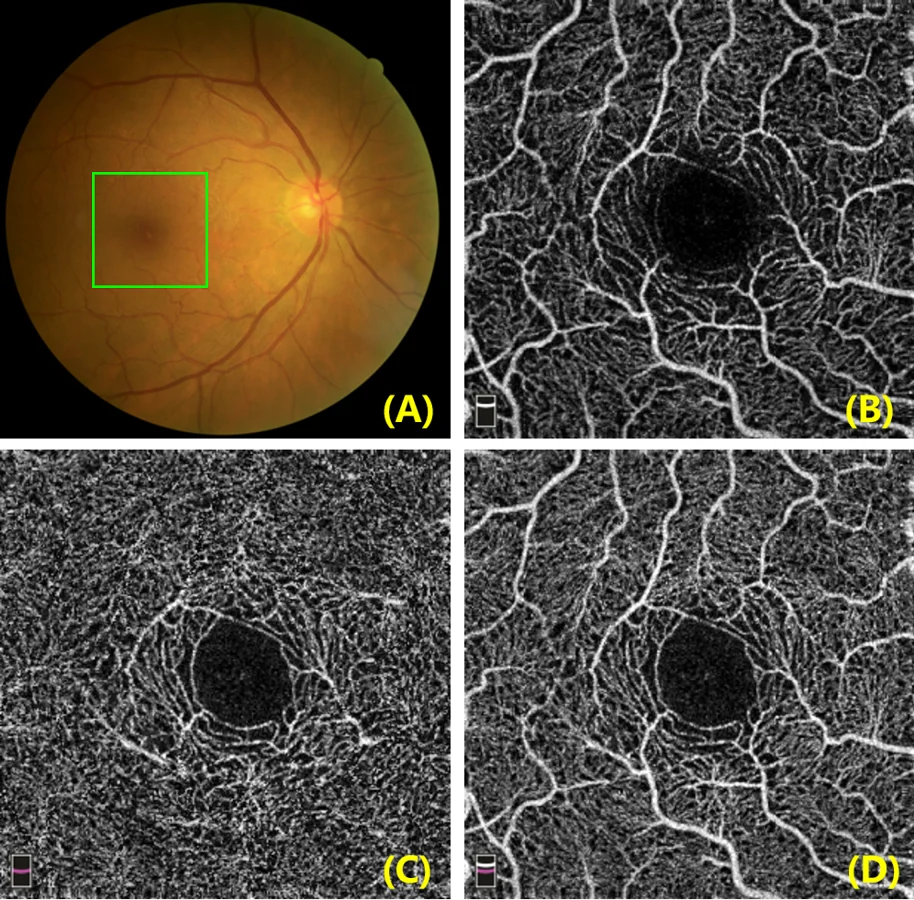
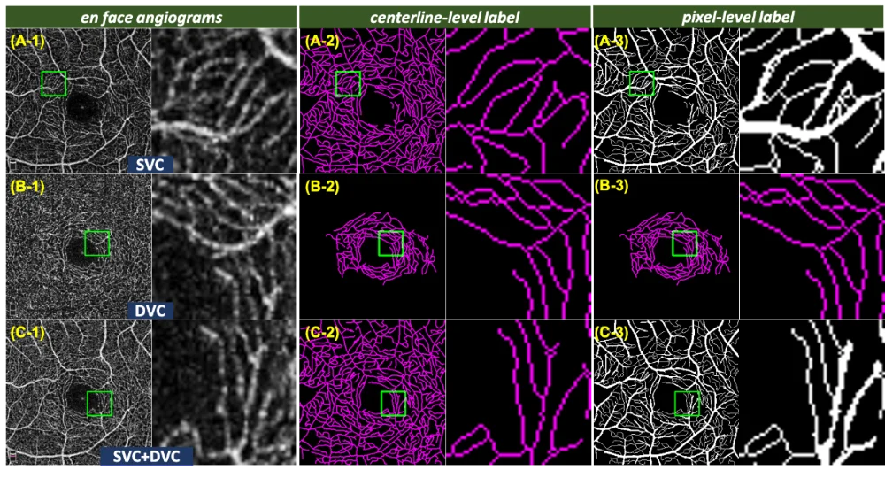
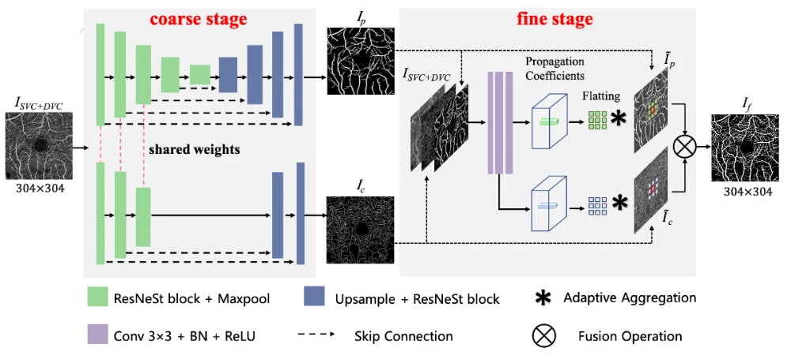

光学相干断层扫描血管造影（OCTA）是一种新兴的非侵入式成像技术，近年来已逐渐成为眼底相关疾病诊断的有效工具。相比与常见的眼底彩照（图1.A），OCTA（图1.B-D），可观察到毛细血管级别的微血管细节，尤其是对分布在黄斑中央凹周不同深度的微血管系统可进行相对较高分辨率的成像，这包括了浅层血管复合体（superficial vascular complex, SVC）和深层血管复合体（deep vascular complex, DVC）,见图1.B-C。观察和量化这些不同深度的微血管形态结构有助于临床医生对许多眼科疾病的诊断。最近一些研究表明，OCTA图像中的微血管形态改变与常见的眼科疾病相关之外，还与阿尔茨海默氏病（AD）等神经退行性疾病相关。因此，眼科检查有望成为观测神经退行性疾病发展的新途径。

图1. （A）眼底彩照，绿框为黄斑区域；（B-D）不同深度的OCTA图像。
目前在医学图像及计算机视觉领域，尚未有公开的带有专家标注的OCTA血管分割数据集。团队与英国利物浦大学及国内多家科研及临床机构合作，建立了目前领域内首个眼科OCTA血管分割数据集（ROSE）。该数据集包含了视网膜微血管网络的精确手工标注（含中心线标注和像素级标注）以促进该领域的相关研究。ROSE数据集共包含了229张OCTA图像，包括了SVC、DVC以及内层视网膜血管丛（SVC + DVC）的en face图像。这批数据分别由RTVue XR Avanti SD-OCT系统（美国Optovue公司）和Heidelberg Spectralis OCT2系统（海德堡，德国）采集，扫描区域为以黄斑中央凹为中心的3×3mm2的区域。资深图像专家和临床医生制定统一的手工标注标准，并共同完成了两种不同类型的血管标注：中心线级标注和像素级标注（如图2）。
此外，我们还提出了一种由粗到细的双阶段血管分割网络OCTA-Net （如图3），用于OCTA中的血管分割提取，旨在分别检测粗细不同尺寸的血管。首先，在粗分割阶段中采用了以ResNeSt为骨干网络的编码-解码网络作为基于多分支的粗分割（SCS）模块，用于生成血管的初步置信度图。然后，在细分割阶段中，基于多分支的细化分割（SRS）模块根据原图和粗分割阶段的初步结果自适应地生成聚合系数，用于对细小血管的预测结果进行优化，以获得更准确的整体分割结果。实验结果表明，该方法明显优于其他方法，尤其是在提取高噪声和低可见度的毛细血管的能力。
值得一提的是，ROSE数据集内包含了健康组和患病组数据（AD、黄斑疾病），通过在OCTA-Net分割的结果上进行分形维数分析（Fractal dimension analysis）发现，AD与健康组之间存在显著差异，表明神经退行性疾病可能引起了视网膜微血管的结构形态的变化，亦或视网膜微血管结构形态的变化侧面反映出了神经退行性疾病的发展进程。该数据库和相关实验结果近期发表在国际期刊 IEEE Transactions on Medical Imaging。

图2. ROSE中三种血管造影图及两类血管标注示例

图3. OCTA-Net框架图